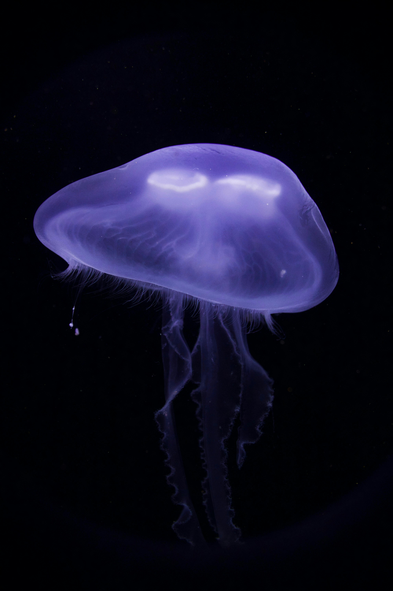

This is an example of Box Model
California
California is a state in the Western region of the United States that lies on the Pacific Coast. It borders Oregon to the north, Nevada and Arizona to the east, and shares an international border with the Mexican state of Baja California to the south. With over 39 million residents across an area of 163,696 square miles (423,970 km2), it is the most populous U.S. state, the third-largest by area, and the most populated subnational entity in North America. Prior to European colonization, California was one of the most culturally and linguistically diverse areas in pre-Columbian North America. European exploration in the 16th and 17th centuries led to the colonization by the Spanish Empire. The area became a part of Mexico in 1821, following its successful war for independence, but was ceded to the United States in 1848 after the Mexican–American War. The California gold rush started in 1848 and led to social and demographic changes, including depopulation of Indigenous tribes. The western portion of Alta California was then organized and admitted as the 31st state in 1850, as a free state, following the Compromise of 1850.

The Greater Los Angeles and San Francisco Bay areas are the nation's second- and fifth-most populous urban regions, with 19 million and 10 million residents respectively.[11] Los Angeles is the state's most populous city and the nation's second-most; California's capital is Sacramento. Part of the Californias region of North America, the state's diverse geography ranges from the Pacific Coast and metropolitan areas in the west to the Sierra Nevada mountains in the east, and from the redwood and Douglas fir forests in the northwest to the Mojave Desert in the southeast. Two-thirds of the nation's earthquake risk lies in California.[12] The Central Valley, a fertile agricultural area, dominates the state's center. The large size of the state results in climates that vary from moist temperate rainforest in the north to arid desert in the interior, as well as snowy alpine in the mountains. Droughts and wildfires are an ongoing issue,[13] while simultaneously, atmospheric rivers are turning increasingly prevalent and leading to intense flooding events—especially in the winter.